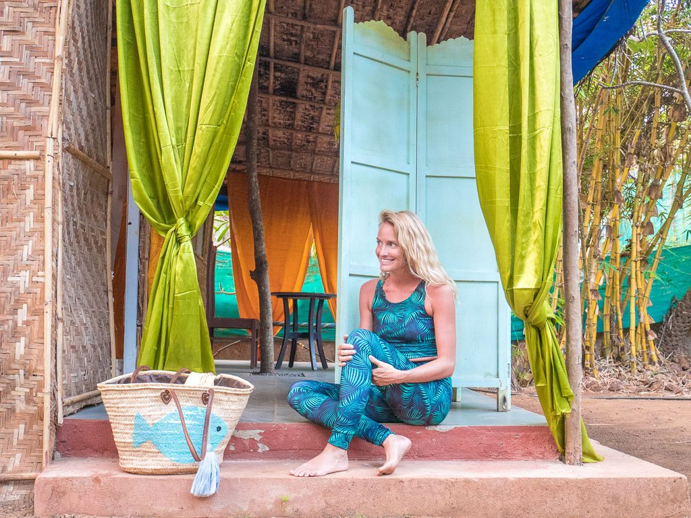
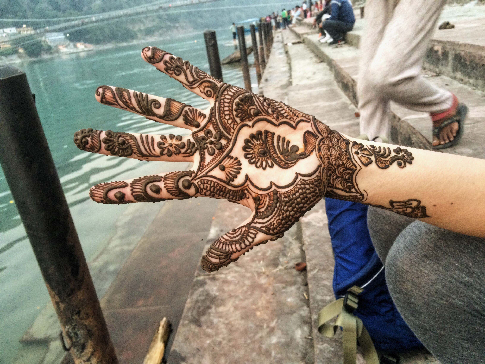
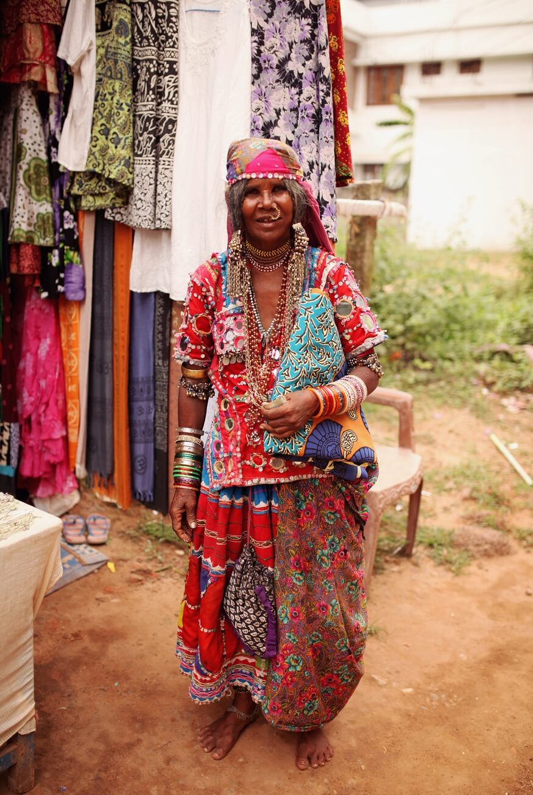

How To Do Solo Female Travel In India Like A BOSS!
The thought of travelling India alone can seem scary at first. I’ve been living and travelling all over the country for four years now, and the funny thing is, it doesn’t ever get easier. Of the 36 countries I’ve travelled to, India is by far the most challenging.
But it can also be the most rewarding. Now you’ve probably heard people say you’ll either love or hate India, but I’m going to let you in on a little secret: The key to happy travels in India, is preparation. It’s not one of those countries where you can just “wing it”; you’ll end up anxious, stressed and quite possibly in danger. Sadly this is particularly true for solo female travel in India. To help make things a little easier, I’ve put together this guide with everything you need to know about travelling to India alone.
Is It Safe For A Woman To Travel Alone In India?

This is probably the biggest concern for solo female travellers in India. There’s no simple answer to this question, but in a nutshell: India CAN be a safe destination. As with anywhere else, you can be unlucky or in the wrong place at the wrong time. But that could also happen in your hometown, or in a “safe” destination in Western Europe. Taking luck out of the equation, there’s lots you can do to help yourself stay safe. As I said above, this isn’t the kind of place where you can just wing it. Even if you prefer to be spontaneous, you’ll need to have some plans or “rules” that you stick to no matter what.

 ? @hippieinheelsblog
? @hippieinheelsblog
Top Safety Tips For Solo Female Travellers In India
- Don’t get stupidly drunk. Seriously, if you only take away one piece of advice from this blog post, this should be it.
- When you go out, always take a fully charged mobile phone with you, so that if you end up in a difficult situation you can call someone you trust for help. An extra battery pack is also an excellent investment to ensure you’ll never be left without a phone.
- Take the number and address of your hostel with you. If you’re in a dodgy situation or get lost, they can often arrange for a trusted local driver to pick you up, which is much safer than just jumping into a passing taxi.
- Arrange to be picked up from the station/airport in advance. Again, your hostel might be able to help with this.
- Generally it’s best to travel during the day instead of at night, especially on trains and buses.
- Get into the habit of regular calls with family or friends at a pre-arranged time.
- As with any sort of travel, you’ll need to trust your gut feeling.
- Make sure you’re in a public place when interacting with strangers, that includes Tinder dates (at least initially!)
- If something seems too good to be true, it probably is. Scams in India are nearly unavoidable, but saying no to “help” strangers offer when you didn’t ask for it, is the best way to prevent scams.
- Stay in a hostel so you can make friends with other travellers, and have someone to go on adventures with.
Nothing is without risk, but with a bit of common sense and preparation India can be as safe as any other destination for a solo female traveller.

Best Places To Visit In India For Solo Female Travellers
The biggest tip I can give is to choose only a few cities. The more you are in transit, the more stress you have. India’s a huge, and getting around is generally slower than in countries with more developed road and public transport networks. Try to travel slow and stay in each place a longer time. Don’t try to cover it all. Here are a few of the best places for
Kerala & Varkala

They refer to Kerala as ‘India Lite’ meaning, it’s a bit less intense than the rest of India and far less intense than the North. So it’s a nice area to explore as a solo female traveller, especially if it’s your first time in India. One of Kerala’s best spots is the beach side town of Varkala, where you’ll find loads of other travellers to hang out with. It’s a bit of a yoga hub, and really safe and friendly. Part of Varkala’s charm is the fact that it’s quite small, and most travellers tend to gather in quite a small area near the beach, so small it’s very walkable and you won’t have to get too many Rickshaws alone. I didn’t have to find transportation if I went out at night, I could just walk everywhere.
– Recommended by The Travelling Light
Mumbai
Mumbai is a must visit city for many reasons, not least because most international flights arrive and depart from here. There’s so much to do in Mumbai, and like India’s other big cities, Mumbai can be great for a solo female traveler because of the international vibe and lively hostel scene. One of the best places to visit in Mumbai is Colaba, it’s where the cool kids are. You should also try to travel on the Mumbai Slow Local train during rush hour. THAT is an experience you’ll never ever forget! And of course you can visit the famous Taj Hotel areas and the Gateway of India.
– Recommended by Hippie In Heels
Rishikesh

 ? @ourbroketravels
? @ourbroketravels
This is one of the most spiritual cities in India and if you’re looking for a chilled time after New Delhi, you should definitely head North to Rishikesh. Expect sunsets over the River Ganga, air so clean you can taste it, hot cups of chai on your hostel rooftop and SO MUCH yoga. For more reasons to visit, read our guide to Rishikesh.
– Recommended by Our Broke Travels
Hampi

Hampi was once the capital of the Greatest Hindu Empire and what remains of it is beyond breath taking. Hundreds of ancient ruins and crumbling temples do the area nestled between beautiful green palms and the infamous boulders. Despite being a World Heritage Site, Hampi is a small town. It’s is a welcome relief after the craziness of the larger cities and it’s really easy to meet other travellers to explore the area with. My favourite part about Hampi is the sunset: after a short hike you will have a spectacular view of the old capital illuminated in all shades of orange, yellow and gold.
New Delhi

Just like Mumbai, you’ll almost certainly end up spending some time in New Delhi during your trip, especially if you plan to visit the nearby Taj Mahal (in Agra). In general I find it more difficult to travel than Mumbai, but if you stay in Connaught Place and meet other travelers you’ll be fine. Best places to visit in New Delhi: The Red Fort, Humyan’s Tomb, and India Gate. Club together with other travellers at your hostel and hire a rickshaw driver for the day so you can see the city’s main sights in one go. Be sure to negotiate the rate before you set off, and pay at the end of the day.
– Recommended by Hippie In Heels
Varanasi

Varanasi is a place like no other. A place I need not return and a place I will never forget. It’s loud, colourful, overflowing and beautiful. It’s like walking into magic. Never has the term ‘holy city’ been more true. Amidst the chaos there is the calm, out on a boat at dawn in the middle of the river Ganges you will experience pure serenity.
– Recommended by Madison J Lilli Coupland
More Advice For Women Travelling India Alone
So you’ve decided you want to backpack India solo. Congratulations on the best travel decision you’ll ever make! But now you need to think about all the practical stuff that will ensure your trip is a success: what to wear, when to visit and how to stay safe. To help you out, I’ve tried to cover off some of the most common questions.
What to wear when traveling to India

 ? @thetravellinglight
? @thetravellinglight
India is very conservative in some areas and this is definitely one of the aspects that requires research and preparation beforehand. Harem pants are an India wardrobe essential, and you can pick up some gorgeous ones really cheaply at markets in places like Goa and Kerala. They’re baggy and will suit most situations. They’re also easy to wash and will dry quickly so you’ll save loads of space in your backpack. The second essential item of clothing for India is a shawl; these are particularly useful to have handy in case you stumble across a temple you want to go into, as you’ll need to fully cover up.
You’ll also want to wear a t shirt that does not scoop too low; cleavage is not advisable. Maxi skirts are great, as are culottes and long dresses. In the cities, girls wear skinny jeans. In Goa, anything goes! You should simply use common sense when deciding what to wear in India: look around you at what other people are doing, and if in doubt ask the staff and fellow travellers at your hostel.
What not to do in India
Don’t break the law! This one might seem obvious, but it bears repeating. In some areas you’ll likely see Sadhu’s or holy men smoking hashish, but as a foreigner, the easygoing “look the other way” rules do not apply to you and you should not take drugs here as they are illegal. Many travellers don’t realise that even alcohol is illegal in some Northern areas, such as Rajasthan, so always err on the side of caution and ask if you’re unsure.
When to travel to India
Ideally you’ll want to visit India between October and March to avoid the very hot times and the monsoon. They can both be a little uncomfortable, especially if you’re used to a more mild climate. However, if you’re on a really tight budget, visiting off season can be a great option to help you save money. The added benefit of backpacking India off season is that you’ll be able to explore the iconic sights such as the Taj Mahal without the insane crowds.
5 Reasons Why You Should Backpack India Solo In 2017

1. It’s Never Been Easier For Women To Travel India Alone
India is changing at a crazy pace. Four years ago when I came to India alone, hostels were not a thing yet. And it was much harder to travel here solo, particularly for women. Now, you’ll find SO many popular hostels making it easy to meet other travellers and make your travels in India so much easier.
2. The People Will Change Your Perspective
The people in India are crazy, funny and incredibly friendly. If you’re looking for an eye-opening cultural experience, head to the Northeast of the country, which is a bit more off the beaten track. Here you’ll be able to meet some of the local tribes and learn about their fascinating culture. I recommend Ziro Valley, where you can meet the local Apatani tribe who worship the moon.
3. The Food Is Unreal
In the North, it’s rich and creamy and in the South it’s fresher and light, often with coconut oil. The seafood at the coast is amazing and you must try the Kingfish Rava fry. It’s safe to say the food in India is on a whole other level: you’ll never experience tastes quite like these.
4. You will never, ever get bored in India
The Himalayan Mountains, the beaches of Goa, the sweeping rice fields of Kerala, the chaos of Mumbai, the wide open deserts of Rajasthan… There is SO much variety in India that you could spend a lifetime exploring all its secrets. If you’re looking to pack a lot into your trip without too much time spent on planes, India is a fantastic destination.
5. India Will Take Your Style To The Next Level
Ladies, bring less than you think for your trip, because you’ll need the space in your backpack. The shopping here is amazing and you’ll end up with a whole new wardrobe for next to nothing. Gorgeous prints, handmade accessories and exquisite fabrics. Even if you don’t want to haggle, the prices will still seem insanely cheap.

![]()